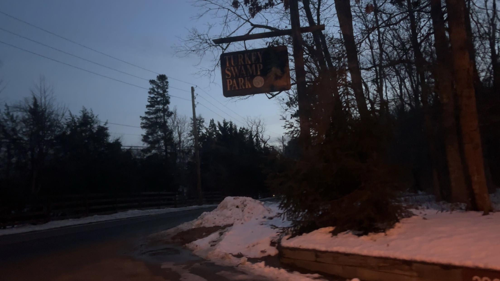

Turkey Swamp Park is actually not a swamp, nor inhabits turkeys. The name actually comes from what Adelphia NJ was called previously, which was "Turkey". This Park being the last reminder of so. As for the Swamp part, it comes from bearing resemblance to a swamp when conditions are just right for it.
They are an array of activities that can be done in this place. over the warmer seasons for instance,
Different types of boats for rent
Camping
fishing
Archery
Trails
soccer
As for the colder season, they also allow for skiing or skating. They even host several events that can be seen on their official website